673ef223.json
Navigation
Train Examples


Test Example


Participant 1
Initial description: I tried to follow the same rules. This included changing the blue end pieces to a solo yellow piece. I placed the red lines in the same area and then used the blue stripes to connect the red and the yellows.
Final description: I forgot about the blue lines on the bottom. I included those this time. I made sure to line up the blue lines with the example task that had the same 6 length line.
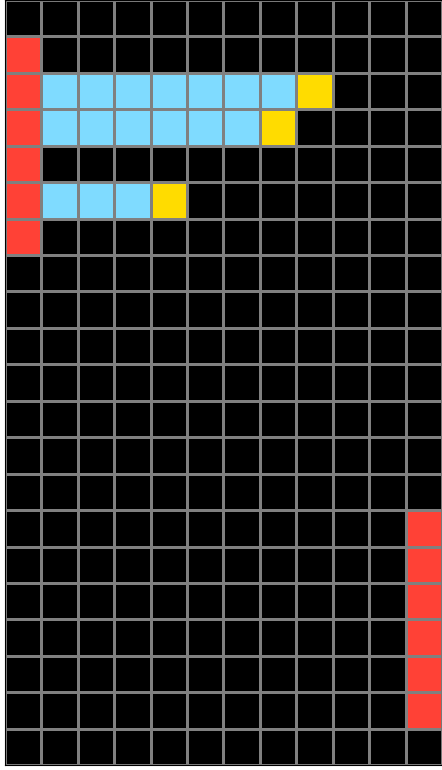

Participant 2
Initial description: well
Final description: well

Participant 3
Initial description: Run 3 sets of yellow to the upper blue boxes; run a line of blue from the lower red to the far left.
Final description: Add yellow lines between the blue and red boxes.
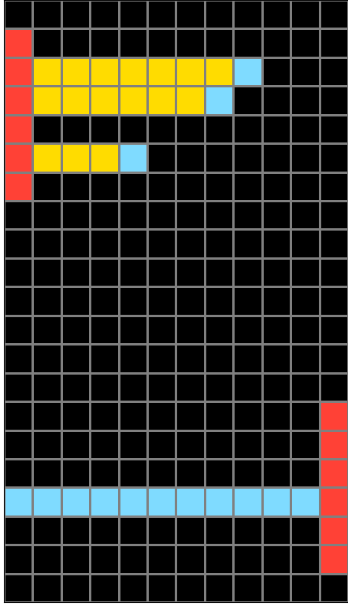
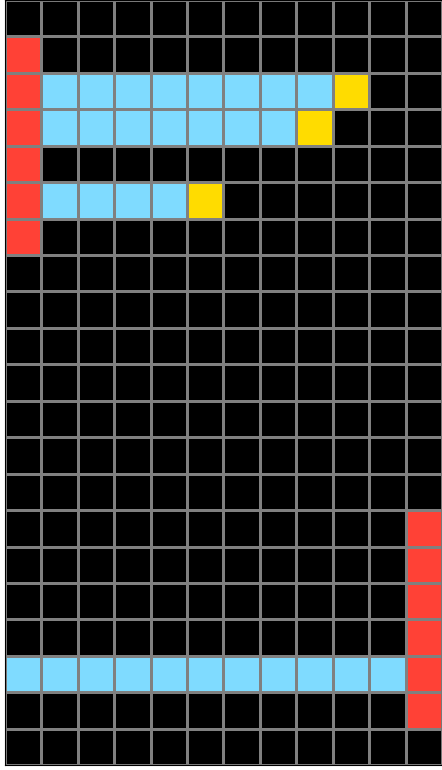
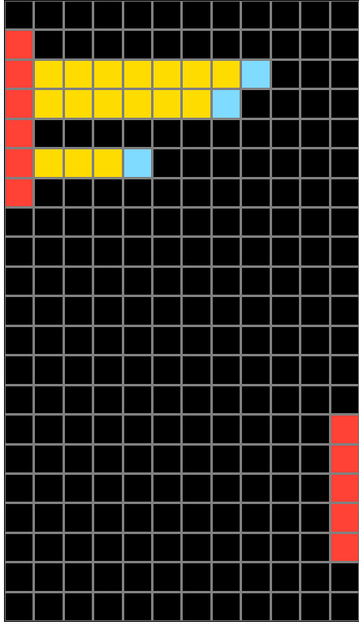
Participant 4
Initial description: The red bars are the same. The blue dots change to yellow with blue bars extending to the red. Blue bars go clear across from the other red bar at the same location as the blue dots at the other red bar
Final description: There is absolutely no reason why this isn't correct. It is EXACTLY like every.single.example. I've counted over and over again. On my second, I discovered there were 22 blocks down even though the number was at 21. When I accepted 21 again, it changed. But was STILL wrong. I'm about to quit.

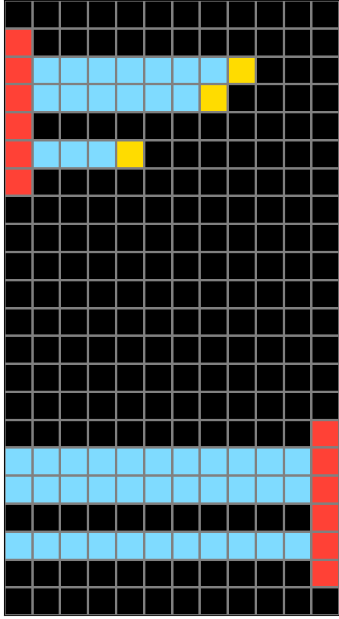

Participant 5
Initial description: Change the blue squares to yellow, and draw blue lines between those and the red squares on the left. Down at the bottom draw blue lines all the way across the grid to the red squares in the same vertical positions as the blue lines above
Final description: Change the blue squares to yellow, and draw blue lines between those and the red squares on the left. Down at the bottom draw blue lines all the way across the grid to the red squares in the same vertical positions as the blue lines above

Participant 6
Initial description: the top u turn the light blue yellow and then go all light blue to the red and the bottom just go light blue to the red
Final description: the top u turn the light blue yellow and then go all light blue to the red and the bottom just go light blue to the red

Participant 7
Initial description: Based on the examples.
Final description: Based on the examples.

Participant 8
Initial description: 0ne square resulted in one line top and bottom. Two squared made two line and three squares made 3 lines.
Final description: One square made one line top and bottom, 2 made 2 and 3 made three. I just miscounted the top lines the first time.
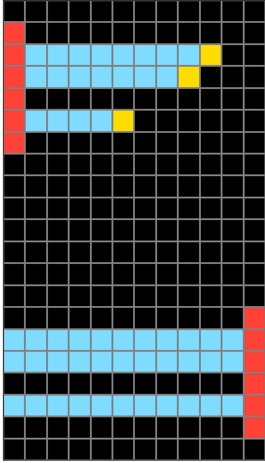

Participant 9
Initial description: Change the blue cells to yellow, then have a solid blue line go to the peach column. On the bottom, have two blue lines go out at equal spacing.
Final description: On the top peach column, change the blue single cells to a yellow color. Then, with the rows that have the yellow single cell, change the cells between the peach and yellow to the light blue color. On the bottom, if there are six peach cells, on the second, third and fifth row, change the black cells to light blue cells.
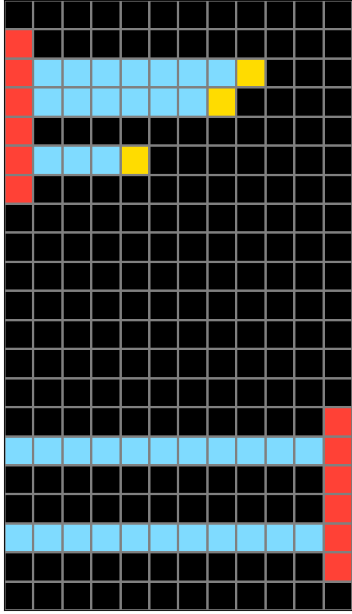

Participant 10
Initial description: The red blocks of the test input are copied exactly (size, position). The light blue blocks to the side of the top red block shape indicate the color (light blue) of the cross blocks and where they end (running from the red blocks to the blue block), however, each blue block in the test input becomes yellow. The bottom red shape is the same as the top but on the opposite side. Each red block corresponds to one in the top red shape and has a blue row running all the way to the opposite edge.
Final description: The red blocks of the test input are copied exactly (size, position). The light blue blocks to the side of the top red block shape indicate the color (light blue) of the cross blocks and where they end (running from the red blocks to the blue block), however, each blue block in the test input becomes yellow. The bottom red shape is the same as the top but on the opposite side. Each red block corresponds to one in the top red shape and has a blue row running all the way to the opposite edge.

Participant 11
Initial description: On the top, I extended the blue square horizontally to meet up with the red vertical line. Then, I changed the ending blue square to yellow. On the bottom, I extended three blue lines horizontally from the red vertical line.
Final description: On the top, I extended the blue square horizontally to meet up with the red vertical line. Then, I changed the ending blue square to yellow. On the bottom, I extended three blue lines horizontally from the red vertical line.
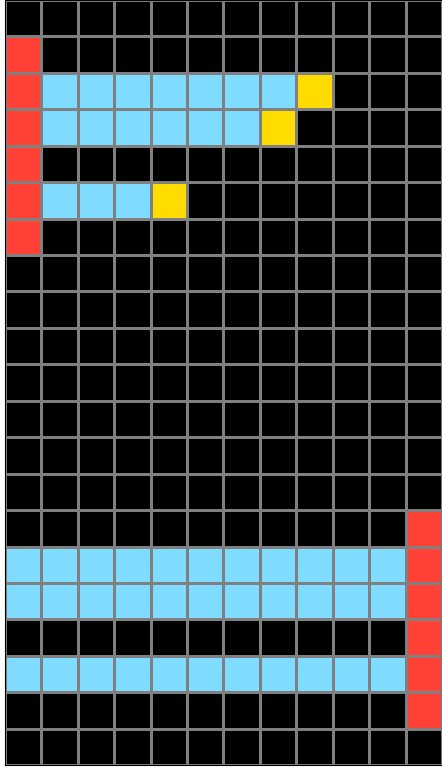
Participant 12
Initial description: yes
Final description: none
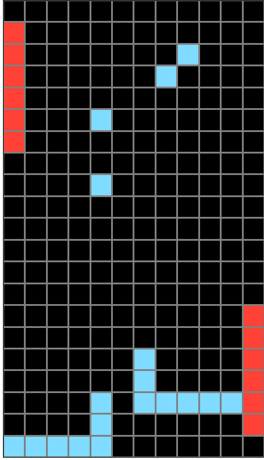
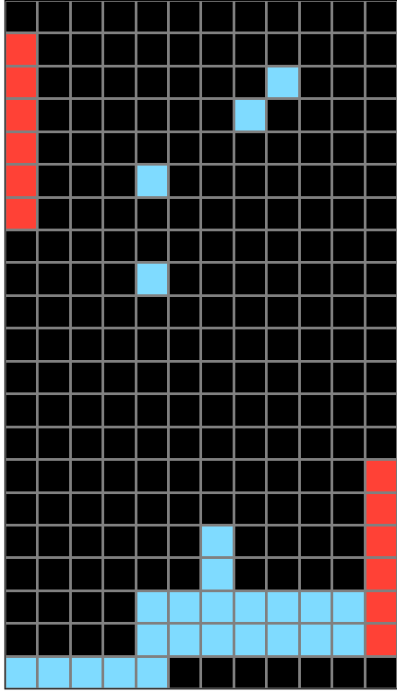
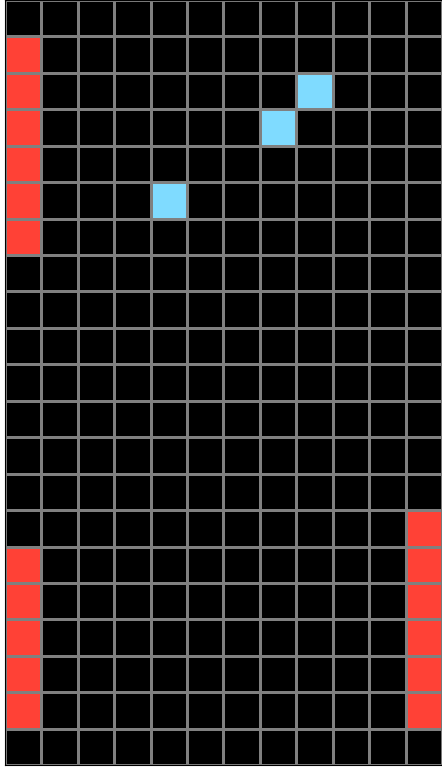
Participant 13
Initial description: Copy the test input. Then on the top half of the grid, change the blue input to yellow and then make the rest of the blocks blue on the row to the side of the grid with the red blocks. On the bottom half, recreate the spacing of the rows on the top and make the blocks all blue away from the red blocks to the other side of the grid.
Final description: Copy the test input. Then on the top half of the grid, change the blue input to yellow and then make the rest of the blocks blue on the row to the side of the grid with the red blocks. On the bottom half, recreate the spacing of the rows on the top and make the blocks all blue away from the red blocks to the other side of the grid.